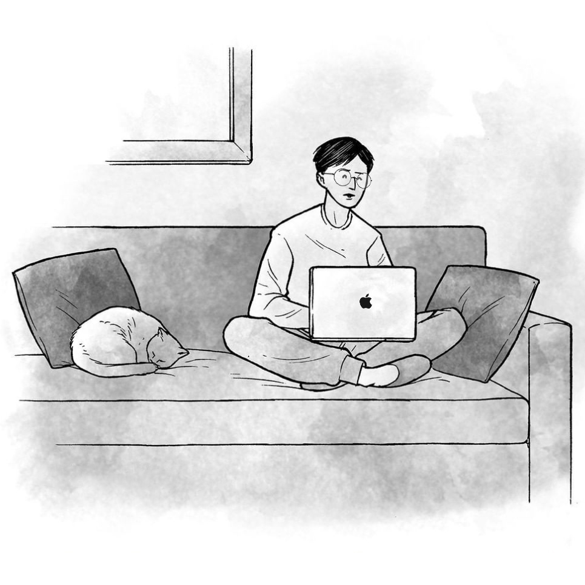

Hello World!
안녕하세요, (미래의) 프론트 엔드 개발자 정수영입니다.
수학이 싫어서 문과를 선택했던 제가 이런 이야기를 하는 것이 나도 믿기지는 않지만, 중학생 시절 호기심에 C++ 관련 서적을 구매했었습니다.
물론, 당시의 보잘 것 없던 끈기로는 앞장을 몇 번 넘겨보는 게 전부였지만 말이죠.
그럼에도 불구하고 긴 시간 동안 이따금씩 저의 평온한 일상을 흔들던 것은 개발자에 대한 동경이었습니다.
랩탑의 까만 화면 위로 펼쳐진 알록달록한 코드들과 현란하게 타이핑하는 손. 그것은 제가 생각하는 ‘가장 멋진 모습 베스트 5’ 안에 항상 들어가는 모습이었습니다.
‘그런 멋진 직업이 내 직업이 된다면?’ 그런 작은 기대와 설렘으로 익숙지 않은 공부를 시작하게 되었습니다.